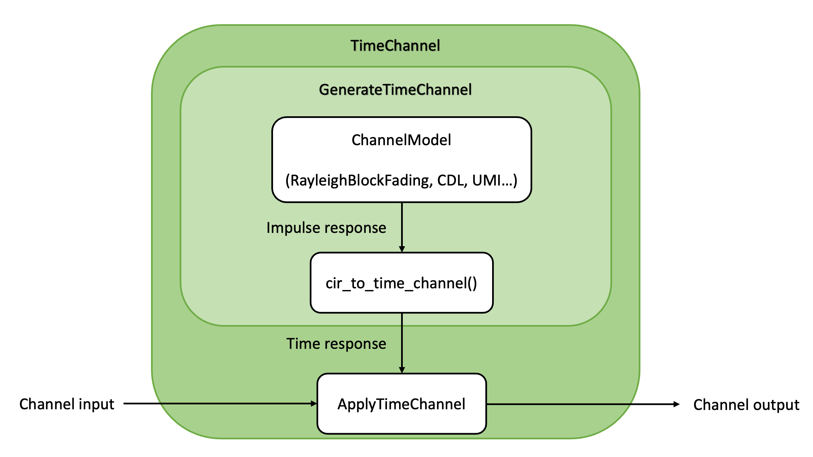

Apart from flat-fading, all of these models generate channel impulse responses (CIRs) that can then be used to
implement a channel transfer function in the time domain or
assuming an OFDM waveform.
This is achieved using the different functions, classes, and Keras layers which
operate as shown in the figures below.

Fig. 12 Channel module architecture for time domain simulations.
Fig. 13 Channel module architecture for simulations assuming OFDM waveform.
A channel model generate CIRs from which channel responses in the time domain
or in the frequency domain are computed using the
cir_to_time_channel() or
cir_to_ofdm_channel() functions, respectively.
If one does not need access to the raw CIRs, the
GenerateTimeChannel and
GenerateOFDMChannel classes can be used to conveniently
sample CIRs and generate channel responses in the desired domain.
Once the channel responses in the time or frequency domain are computed, they
can be applied to the channel input using the
ApplyTimeChannel or
ApplyOFDMChannel Keras layers.
The following code snippets show how to setup and run a Rayleigh block fading
model assuming an OFDM waveform, and without accessing the CIRs or
channel responses.
This is the easiest way to setup a channel model.
Setting-up other models is done in a similar way, except for
AWGN (see the AWGN
class documentation).
# x is the channel input# no is the noise variancey=channel([x,no])
To use the time domain representation of the channel, one can use
TimeChannel instead of
OFDMChannel.
If access to the channel responses is needed, one can separate their
generation from their application to the channel input by setting up the channel
model as follows:
where rg is an instance of ResourceGrid.
Running the channel model is done as follows:
# Generate a batch of channel responsesh=generate_channel(batch_size)# Apply the channel# x is the channel input# no is the noise variancey=apply_channel([x,h,no])
For the purpose of the present document, the following symbols apply:
\(N_T (u)\)
Number of transmitters (transmitter index)
\(N_R (v)\)
Number of receivers (receiver index)
\(N_{TA} (k)\)
Number of antennas per transmitter (transmit antenna index)
\(N_{RA} (l)\)
Number of antennas per receiver (receive antenna index)
\(N_S (s)\)
Number of OFDM symbols (OFDM symbol index)
\(N_F (n)\)
Number of subcarriers (subcarrier index)
\(N_B (b)\)
Number of time samples forming the channel input (baseband symbol index)
\(L_{\text{min}}\)
Smallest time-lag for the discrete complex baseband channel
\(L_{\text{max}}\)
Largest time-lag for the discrete complex baseband channel
\(M (m)\)
Number of paths (clusters) forming a power delay profile (path index)
\(\tau_m(t)\)
\(m^{th}\) path (cluster) delay at time step \(t\)
\(a_m(t)\)
\(m^{th}\) path (cluster) complex coefficient at time step \(t\)
\(\Delta_f\)
Subcarrier spacing
\(W\)
Bandwidth
\(N_0\)
Noise variance
All transmitters are equipped with \(N_{TA}\) antennas and all receivers
with \(N_{RA}\) antennas.
A channel model, such as RayleighBlockFading or
UMi, is used to generate for each link between
antenna \(k\) of transmitter \(u\) and antenna \(l\) of receiver
\(v\) a power delay profile
\((a_{u, k, v, l, m}(t), \tau_{u, v, m}), 0 \leq m \leq M-1\).
The delays are assumed not to depend on time \(t\), and transmit and receive
antennas \(k\) and \(l\).
Such a power delay profile corresponds to the channel impulse response
where \(\delta(\cdot)\) is the Dirac delta measure.
For example, in the case of Rayleigh block fading, the power delay profiles are
time-invariant and such that for every link \((u, k, v, l)\)
3GPP channel models use the procedure depicted in [TR38901] to generate power
delay profiles. With these models, the power delay profiles are time-variant
in the event of mobility.
Add complex AWGN to the inputs with a certain variance
This layer blocks complex AWGN noise with variance no to the input.
The noise has variance no/2 per real dimension.
It can be either a scalar or a tensor which can be broadcast to the shape
of the input.
Example
Setting-up:
>>> awgn_channel=AWGN()
Running:
>>> # x is the channel input>>> # no is the noise variance>>> y=awgn_channel(x,no)
Parameters:
precision (None (default) | “single” | “double”) – Precision used for internal calculations and outputs.
If set to None,
precision is used.
Input:
x (Tensor, tf.complex) – Channel input
no (Scalar or Tensor, tf.float) – Scalar or tensor whose shape can be broadcast to the shape of x.
The noise power no is per complex dimension. If no is a
scalar, noise of the same variance will be added to the input.
If no is a tensor, it must have a shape that can be broadcast to
the shape of x. This allows, e.g., adding noise of different
variance to each example in a batch. If no has a lower rank than
x, then no will be broadcast to the shape of x by adding
dummy dimensions after the last axis.
Output:
y (Tensor with same shape as x, tf.complex) – Channel output
where \(\mathbf{H}\in\mathbb{C}^{M\times K}\) are randomly generated
flat-fading channel matrices and
\(\mathbf{n}\in\mathbb{C}^{M}\sim\mathcal{CN}(0, N_o\mathbf{I})\)
is an AWGN vector that is optionally added.
A SpatialCorrelation can be configured and the
channel realizations optionally returned. This is useful to simulate
receiver algorithms with perfect channel knowledge.
Parameters:
num_tx_ant (int) – Number of transmit antennas
num_rx_ant (int) – Number of receive antennas
spatial_corr (None (default) | SpatialCorrelation) – Spatial correlation to be applied
return_channel (bool, (default False)) – Indicates if the channel realizations should be returned
precision (None (default) | “single” | “double”) – Precision used for internal calculations and outputs.
If set to None,
precision is used.
Input:
x ([batch_size, num_tx_ant], tf.complex) – Tensor of transmit vectors
no (None (default) | Tensor, tf.float) – (Optional) noise power no per complex dimension.
Will be broadcast to the shape of y.
For more details, see AWGN.
Output:
y ([batch_size, num_rx_ant], tf.complex) – Channel output
h ([batch_size, num_rx_ant, num_tx_ant], tf.complex) – Channel realizations. Will only be returned if
return_channel==True.
Applies given channel matrices to a vector input and adds AWGN
This class applies a given tensor of flat-fading channel matrices
to an input tensor. AWGN noise can be optionally added.
Mathematically, for channel matrices
\(\mathbf{H}\in\mathbb{C}^{M\times K}\)
and input \(\mathbf{x}\in\mathbb{C}^{K}\), the output is
where \(\mathbf{n}\in\mathbb{C}^{M}\sim\mathcal{CN}(0, N_o\mathbf{I})\)
is an AWGN vector that is optionally added.
Parameters:
precision (None (default) | “single” | “double”) – Precision used for internal calculations and outputs.
If set to None,
precision is used.
Input:
x ([batch_size, num_tx_ant], tf.complex) – Transmit vectors
h ([batch_size, num_rx_ant, num_tx_ant], tf.complex) – Channel realizations. Will be broadcast to the
dimensions of x if needed.
no (None (default) | Tensor, tf.float) – (Optional) noise power no per complex dimension.
Will be broadcast to the shape of y.
For more details, see AWGN.
Output:
y ([batch_size, num_rx_ant], tf.complex) – Channel output
Given a batch of matrices \(\mathbf{H}\in\mathbb{C}^{M\times K}\),
\(\mathbf{R}_\text{tx}\in\mathbb{C}^{K\times K}\), and
\(\mathbf{R}_\text{rx}\in\mathbb{C}^{M\times M}\), this function
will generate the following output:
Note that \(\mathbf{R}_\text{tx}\in\mathbb{C}^{K\times K}\) and \(\mathbf{R}_\text{rx}\in\mathbb{C}^{M\times M}\)
must be positive semi-definite, such as the ones generated by
exp_corr_mat().
Parameters:
r_tx ([…, K, K], tf.complex) – Transmit correlation matrices. If
the rank of r_tx is smaller than that of the input h,
it will be broadcast.
r_rx ([…, M, M], tf.complex) – Receive correlation matrices. If
the rank of r_rx is smaller than that of the input h,
it will be broadcast.
precision (None (default) | “single” | “double”) – Precision used for internal calculations and outputs.
If set to None,
precision is used.
Input:
h ([…, M, K], tf.complex) – Spatially uncorrelated channel coeffficients
Output:
h_corr ([…, M, K], tf.complex) – Spatially correlated channel coefficients
Given a batch of matrices \(\mathbf{H}\in\mathbb{C}^{M\times K}\)
and correlation matrices \(\mathbf{R}_k\in\mathbb{C}^{M\times M}, k=1,\dots,K\),
this function will generate the output \(\mathbf{H}_\text{corr}\in\mathbb{C}^{M\times K}\),
with columns
where \(\mathbf{h}_k\) is the kth column of \(\mathbf{H}\).
Note that all \(\mathbf{R}_k\in\mathbb{C}^{M\times M}\) must
be positive semi-definite, such as the ones generated
by one_ring_corr_mat().
This model is typically used to simulate a MIMO channel between multiple
single-antenna users and a base station with multiple antennas.
The resulting SIMO channel for each user has a different spatial correlation.
Parameters:
r_rx ([…, M, M], tf.complex) – Receive correlation matrices. If
the rank of r_rx is smaller than that of the input h,
it will be broadcast. For a typically use of this model, r_rx
has shape […, K, M, M], i.e., a different correlation matrix for each
column of h.
precision (None (default) | “single” | “double”) – Precision used for internal calculations and outputs.
If set to None,
precision is used.
Input:
h ([…, M, K], tf.complex) – Spatially uncorrelated channel coeffficients
Output:
h_corr ([…, M, K], tf.complex) – Spatially correlated channel coefficients
Abstract class that defines an interface for channel models
Any channel model which generates channel impulse responses
must implement this interface.
All the channel models available in Sionna,
such as RayleighBlockFading
or TDL, implement this interface.
Remark: Some channel models only require a subset of the input parameters.
Parameters:
precision (None (default) | “single” | “double”) – Precision used for internal calculations and outputs.
If set to None,
precision is used.
Input:
batch_size (int) – Batch size
num_time_steps (int) – Number of time steps
sampling_frequency (float) – Sampling frequency [Hz]
The model of the channel in the time domain assumes pulse shaping and receive
filtering are performed using a conventional sinc filter (see, e.g., [Tse]).
Using sinc for transmit and receive filtering, the discrete-time domain received
signal at time step \(b\) is
where \(x_{u, k, b}\) is the baseband symbol transmitted by transmitter
\(u\) on antenna \(k\) and at time step \(b\),
\(w_{v, l, b} \sim \mathcal{CN}\left(0,N_0\right)\) the additive white
Gaussian noise, and \(\bar{h}_{u, k, v, l, b, \ell}\) the channel filter tap
at time step \(b\) and for time-lag \(\ell\), which is given by
The two parameters \(L_{\text{min}}\) and \(L_{\text{max}}\) control the smallest
and largest time-lag for the discrete-time channel model, respectively.
They are set when instantiating TimeChannel,
GenerateTimeChannel, and when calling the utility
function cir_to_time_channel().
Because the sinc filter is neither time-limited nor causal, the discrete-time
channel model is not causal. Therefore, ideally, one would set
\(L_{\text{min}} = -\infty\) and \(L_{\text{max}} = +\infty\).
In practice, however, these two parameters need to be set to reasonable
finite values. Values for these two parameters can be computed using the
time_lag_discrete_time_channel() utility function from
a given bandwidth and maximum delay spread.
This function returns \(-6\) for \(L_{\text{min}}\). \(L_{\text{max}}\) is computed
from the specified bandwidth and maximum delay spread, which default value is
\(3 \mu s\). These values for \(L_{\text{min}}\) and the maximum delay spread
were found to be valid for all the models available in Sionna when an RMS delay
spread of 100ns is assumed.
Generates channel responses and applies them to channel inputs in the time domain
The channel output consists of num_time_samples + l_max - l_min
time samples, as it is the result of filtering the channel input of length
num_time_samples with the time-variant channel filter of length
l_max - l_min + 1. In the case of a single-input single-output link and given a sequence of channel
inputs \(x_0,\cdots,x_{N_B}\), where \(N_B\) is num_time_samples, this
layer outputs
where \(L_{\text{min}}\) corresponds l_min, \(L_{\text{max}}\) to l_max, \(w_b\) to
the additive noise, and \(\bar{h}_{b,\ell}\) to the
\(\ell^{th}\) tap of the \(b^{th}\) channel sample.
This layer outputs \(y_b\) for \(b\) ranging from \(L_{\text{min}}\) to
\(N_B + L_{\text{max}} - 1\), and \(x_{b}\) is set to 0 for \(b < 0\) or \(b \geq N_B\).
The channel taps \(\bar{h}_{b,\ell}\) are computed assuming a sinc filter
is used for pulse shaping and receive filtering. Therefore, given a channel impulse response
\((a_{m}(t), \tau_{m}), 0 \leq m \leq M-1\), generated by the channel_model,
the channel taps are computed as follows:
for \(\ell\) ranging from l_min to l_max, and where \(W\) is
the bandwidth.
For multiple-input multiple-output (MIMO) links, the channel output is computed for each antenna of each receiver and by summing over all the antennas of all transmitters.
num_time_samples (int) – Number of time samples forming the channel input (\(N_B\))
maximum_delay_spread (float, (default 3e-6)) – Maximum delay spread [s].
Used to compute the default value of l_max if l_max is set to
None. If a value is given for l_max, this parameter is not used.
It defaults to 3us, which was found
to be large enough to include most significant paths with all channel
models included in Sionna assuming a nominal delay spread of 100ns.
l_min (None (default) | int) – Smallest time-lag for the discrete complex baseband channel (\(L_{\text{min}}\)).
If set to None, defaults to the value given by time_lag_discrete_time_channel().
l_max (None (default) | int) – Largest time-lag for the discrete complex baseband channel (\(L_{\text{max}}\)).
If set to None, it is computed from bandwidth and maximum_delay_spread
using time_lag_discrete_time_channel(). If it is not set to None,
then the parameter maximum_delay_spread is not used.
normalize_channel (bool, (default False)) – If set to True, the channel is normalized over the block size
to ensure unit average energy per time step.
return_channel (bool, (default False)) – If set to True, the channel response is returned in addition to the
channel output.
precision (None (default) | “single” | “double”) – Precision used for internal calculations and outputs.
If set to None,
precision is used.
Input:
x ([batch size, num_tx, num_tx_ant, num_time_samples], tf.complex) – Channel inputs
no (None (default) | Tensor, tf.float) – Tensor whose shape can be broadcast to the shape of the
channel outputs: [batch size, num_rx, num_rx_ant, num_time_samples].
The (optional) noise power no is per complex dimension. If no is a scalar,
noise of the same variance will be added to the outputs.
If no is a tensor, it must have a shape that can be broadcast to
the shape of the channel outputs. This allows, e.g., adding noise of
different variance to each example in a batch. If no has a lower
rank than the channel outputs, then no will be broadcast to the
shape of the channel outputs by adding dummy dimensions after the last
axis.
Output:
y ([batch size, num_rx, num_rx_ant, num_time_samples + l_max - l_min], tf.complex) – Channel outputs
The channel output consists of num_time_samples + l_max - l_min
time samples, as it is the result of filtering the channel input of length
num_time_samples with the time-variant channel filter of length
l_max - l_min + 1.
h_time ([batch size, num_rx, num_rx_ant, num_tx, num_tx_ant, num_time_samples + l_max - l_min, l_max - l_min + 1], tf.complex) – (Optional) Channel responses. Returned only if return_channel
is set to True.
For each batch example, num_time_samples + l_max - l_min time
steps of the channel realizations are generated to filter the channel input.
For each batch example, num_time_samples + l_max - l_min time steps of a
channel realization are generated by this layer.
These can be used to filter a channel input of length num_time_samples using the
ApplyTimeChannel layer.
The channel taps \(\bar{h}_{b,\ell}\) (h_time) returned by this layer
are computed assuming a sinc filter is used for pulse shaping and receive filtering.
Therefore, given a channel impulse response
\((a_{m}(t), \tau_{m}), 0 \leq m \leq M-1\), generated by the channel_model,
the channel taps are computed as follows:
for \(\ell\) ranging from l_min to l_max, and where \(W\) is
the bandwidth.
Parameters:
channel_model (ChannelModel) – Channel model to be used
bandwidth (float) – Bandwidth (\(W\)) [Hz]
num_time_samples (int) – Number of time samples forming the channel input (\(N_B\))
l_min (int) – Smallest time-lag for the discrete complex baseband channel (\(L_{\text{min}}\))
l_max (int) – Largest time-lag for the discrete complex baseband channel (\(L_{\text{max}}\))
normalize_channel (bool, (default False)) – If set to True, the channel is normalized over the block size
to ensure unit average energy per time step.
precision (None (default) | “single” | “double”) – Precision used for internal calculations and outputs.
If set to None,
precision is used.
Input:
batch_size (None (default) | int) – Batch size. Defaults to None for channel models that do not require this parameter.
Output:
h_time ([batch size, num_rx, num_rx_ant, num_tx, num_tx_ant, num_time_samples + l_max - l_min, l_max - l_min + 1], tf.complex) – Channel responses.
For each batch example, num_time_samples + l_max - l_min time steps of a
channel realization are generated by this layer.
These can be used to filter a channel input of length num_time_samples using the
ApplyTimeChannel layer.
Apply time domain channel responses h_time to channel inputs x,
by filtering the channel inputs with time-variant channel responses.
For each batch example, num_time_samples + l_tot - 1 time steps of a
channel realization are required to filter the channel inputs.
The channel output consists of num_time_samples + l_tot - 1
time samples, as it is the result of filtering the channel input of length
num_time_samples with the time-variant channel filter of length
l_tot. In the case of a single-input single-output link and given a sequence of channel
inputs \(x_0,\cdots,x_{N_B}\), where \(N_B\) is num_time_samples, this
layer outputs
where \(L_{\text{tot}}\) corresponds l_tot, \(w_b\) to the additive noise, and
\(\bar{h}_{b,\ell}\) to the \(\ell^{th}\) tap of the \(b^{th}\) channel sample.
This layer outputs \(y_b\) for \(b\) ranging from 0 to
\(N_B + L_{\text{tot}} - 1\), and \(x_{b}\) is set to 0 for \(b \geq N_B\).
For multiple-input multiple-output (MIMO) links, the channel output is computed for each antenna
of each receiver and by summing over all the antennas of all transmitters.
Parameters:
num_time_samples (int) – Number of time samples forming the channel input (\(N_B\))
l_tot (int) – Length of the channel filter (\(L_{\text{tot}} = L_{\text{max}} - L_{\text{min}} + 1\))
precision (None (default) | “single” | “double”) – Precision used for internal calculations and outputs.
If set to None,
precision is used.
Input:
x ([batch size, num_tx, num_tx_ant, num_time_samples], tf.complex) – Channel inputs
h_time ([batch size, num_rx, num_rx_ant, num_tx, num_tx_ant, num_time_samples + l_tot - 1, l_tot], tf.complex) – Channel responses.
For each batch example, num_time_samples + l_tot - 1 time steps of a
channel realization are required to filter the channel inputs.
no (None (default) | tensor, tf.float) – Scalar or tensor whose shape can be broadcast to the shape of the channel outputs: [batch size, num_rx, num_rx_ant, num_time_samples + l_tot - 1].
The (optional) noise power no is per complex dimension. If no is a
scalar, noise of the same variance will be added to the outputs.
If no is a tensor, it must have a shape that can be broadcast to
the shape of the channel outputs. This allows, e.g., adding noise of
different variance to each example in a batch. If no has a lower
rank than the channel outputs, then no will be broadcast to the
shape of the channel outputs by adding dummy dimensions after the
last axis.
Output:
y ([batch size, num_rx, num_rx_ant, num_time_samples + l_tot - 1], tf.complex) – Channel outputs.
The channel output consists of num_time_samples + l_tot - 1
time samples, as it is the result of filtering the channel input of length
num_time_samples with the time-variant channel filter of length
l_tot.
sionna.phy.channel.cir_to_time_channel(bandwidth, a, tau, l_min, l_max, normalize=False)[source]
Compute the channel taps forming the discrete complex-baseband
representation of the channel from the channel impulse response
(a, tau)
This function assumes that a sinc filter is used for pulse shaping and receive
filtering. Therefore, given a channel impulse response
\((a_{m}(t), \tau_{m}), 0 \leq m \leq M-1\), the channel taps
are computed as follows:
Compute the channel frequency response from the discrete complex-baseband
channel impulse response
Given a discrete complex-baseband channel impulse response
\(\bar{h}_{b,\ell}\), for \(\ell\) ranging from \(L_\text{min}\le 0\)
to \(L_\text{max}\), the discrete channel frequency response is computed as
where \(N\) is the FFT size and \(b\) is the time step.
This function only produces one channel frequency response per OFDM symbol, i.e.,
only values of \(b\) corresponding to the start of an OFDM symbol (after
cyclic prefix removal) are considered.
l_min (int) – Smallest time-lag for the discrete complex baseband
channel impulse response (\(L_{\text{min}}\))
Output:
h_f ([…,num_ofdm_symbols,fft_size], tf.complex) – Tensor of discrete complex-baseband channel frequency responses
Note
Note that the result of this function is generally different from the
output of cir_to_ofdm_channel() because
the discrete complex-baseband channel impulse response is truncated
(see cir_to_time_channel()). This effect
can be observed in the example below.
Examples
# Setup resource grid and channel modelsm=StreamManagement(np.array([[1]]),1)rg=ResourceGrid(num_ofdm_symbols=1,fft_size=1024,subcarrier_spacing=15e3)tdl=TDL("A",100e-9,3.5e9)# Generate CIRcir=tdl(batch_size=1,num_time_steps=1,sampling_frequency=rg.bandwidth)# Generate OFDM channel from CIRfrequencies=subcarrier_frequencies(rg.fft_size,rg.subcarrier_spacing)h_freq=tf.squeeze(cir_to_ofdm_channel(frequencies,*cir,normalize=True))# Generate time channel from CIRl_min,l_max=time_lag_discrete_time_channel(rg.bandwidth)h_time=cir_to_time_channel(rg.bandwidth,*cir,l_min=l_min,l_max=l_max,normalize=True)# Generate OFDM channel from time channelh_freq_hat=tf.squeeze(time_to_ofdm_channel(h_time,rg,l_min))# Visualize resultsplt.figure()plt.plot(np.real(h_freq),"-")plt.plot(np.real(h_freq_hat),"--")plt.plot(np.imag(h_freq),"-")plt.plot(np.imag(h_freq_hat),"--")plt.xlabel("Subcarrier index")plt.ylabel(r"Channel frequency response")plt.legend(["OFDM Channel (real)","OFDM Channel from time (real)","OFDM Channel (imag)","OFDM Channel from time (imag)"])
To implement the channel response assuming an OFDM waveform, it is assumed that
the power delay profiles are invariant over the duration of an OFDM symbol.
Moreover, it is assumed that the duration of the cyclic prefix (CP) equals at
least the maximum delay spread. These assumptions are common in the literature, as they
enable modeling of the channel transfer function in the frequency domain as a
single-tap channel.
For every link \((u, k, v, l)\) and resource element \((s,n)\),
the frequency channel response is obtained by computing the Fourier transform of
the channel response at the subcarrier frequencies, i.e.,
where \(s\) is used as time step to indicate that the channel response can
change from one OFDM symbol to the next in the event of mobility, even if it is
assumed static over the duration of an OFDM symbol.
For every receive antenna \(l\) of every receiver \(v\), the
received signal \(y_{v, l, s, n}`\) for resource element
\((s, n)\) is computed by
where \(x_{u, k, s, n}\) is the baseband symbol transmitted by transmitter
\(u`\) on antenna \(k\) and resource element \((s, n)\), and
\(w_{v, l, s, n} \sim \mathcal{CN}\left(0,N_0\right)\) the additive white
Gaussian noise.
Note
This model does not account for intersymbol interference (ISI) nor
intercarrier interference (ICI). To model the ICI due to channel aging over
the duration of an OFDM symbol or the ISI due to a delay spread exceeding the
CP duration, one would need to simulate the channel in the time domain.
This can be achieved by using the OFDMModulator and
OFDMDemodulator layers, and the
time domain channel model.
By doing so, one performs inverse discrete Fourier transform (IDFT) on
the transmitter side and discrete Fourier transform (DFT) on the receiver side
on top of a single-carrier sinc-shaped waveform.
This is equivalent to
simulating the channel in the frequency domain if no
ISI nor ICI is assumed, but allows the simulation of these effects in the
event of a non-stationary channel or long delay spreads.
Note that simulating the channel in the time domain is typically significantly
more computationally demanding that simulating the channel in the frequency
domain.
where \(y_{s,n}\) is the channel output computed by this layer,
\(\widehat{h}_{s, n}\) the frequency channel response,
\(x_{s,n}\) the channel input x, and \(w_{s,n}\) the additive noise.
For multiple-input multiple-output (MIMO) links, the channel output is computed for each antenna
of each receiver and by summing over all the antennas of all transmitters.
The channel frequency response for the \(s^{th}\) OFDM symbol and
\(n^{th}\) subcarrier is computed from a given channel impulse response
\((a_{m}(t), \tau_{m}), 0 \leq m \leq M-1\) generated by the channel_model
as follows:
\[\widehat{h}_{s, n} = \sum_{m=0}^{M-1} a_{m}(s) e^{-j2\pi n \Delta_f \tau_{m}}\]
where \(\Delta_f\) is the subcarrier spacing, and \(s\) is used as time
step to indicate that the channel impulse response can change from one OFDM symbol to the
next in the event of mobility, even if it is assumed static over the duration
of an OFDM symbol.
normalize_channel (bool, (default False)) – If set to True, the channel is normalized over the resource grid
to ensure unit average energy per resource element.
return_channel (bool, (default False)) – If set to True, the channel response is returned in addition to the
channel output.
precision (None (default) | “single” | “double”) – Precision used for internal calculations and outputs.
If set to None,
precision is used.
no (None (default) | tensor, tf.float) – Tensor whose shape can be broadcast to the shape of the
channel outputs:
[batch size, num_rx, num_rx_ant, num_ofdm_symbols, fft_size].
The (optional) noise power no is per complex dimension. If no is
a scalar, noise of the same variance will be added to the outputs.
If no is a tensor, it must have a shape that can be broadcast to
the shape of the channel outputs. This allows, e.g., adding noise of
different variance to each example in a batch. If no has a lower
rank than the channel outputs, then no will be broadcast to the
shape of the channel outputs by adding dummy dimensions after the last
axis.
h_freq ([batch size, num_rx, num_rx_ant, num_tx, num_tx_ant, num_ofdm_symbols, fft_size], tf.complex) – (Optional) Channel frequency responses. Returned only if
return_channel is set to True.
The channel impulse response is constant over the duration of an OFDM symbol.
Given a channel impulse response
\((a_{m}(t), \tau_{m}), 0 \leq m \leq M-1\), generated by the channel_model,
the channel frequency response for the \(s^{th}\) OFDM symbol and
\(n^{th}\) subcarrier is computed as follows:
\[\widehat{h}_{s, n} = \sum_{m=0}^{M-1} a_{m}(s) e^{-j2\pi n \Delta_f \tau_{m}}\]
where \(\Delta_f\) is the subcarrier spacing, and \(s\) is used as time
step to indicate that the channel impulse response can change from one OFDM symbol to the
next in the event of mobility, even if it is assumed static over the duration
of an OFDM symbol.
Parameters:
channel_model (ChannelModel) – Channel model to be used.
normalize_channel (bool, (default False)) – If set to True, the channel is normalized over the resource grid
to ensure unit average energy per resource element.
precision (None (default) | “single” | “double”) – Precision used for internal calculations and outputs.
If set to None,
precision is used.
Input:
batch_size (None (default) | int) – Batch size. Defaults to None for channel models that do not require this parameter.
where \(y_{s,n}\) is the channel output computed by this layer,
\(\widehat{h}_{s, n}\) the frequency channel response (h_freq),
\(x_{s,n}\) the channel input x, and \(w_{s,n}\) the additive noise.
For multiple-input multiple-output (MIMO) links, the channel output is computed for each antenna
of each receiver and by summing over all the antennas of all transmitters.
Parameters:
precision (None (default) | “single” | “double”) – Precision used for internal calculations and outputs.
If set to None,
precision is used.
no (None (default) | tensor, tf.float) – Tensor whose shape can be broadcast to the shape of the
channel outputs:
[batch size, num_rx, num_rx_ant, num_ofdm_symbols, fft_size].
The (optional) noise power no is per complex dimension. If no is a
scalar, noise of the same variance will be added to the outputs.
If no is a tensor, it must have a shape that can be broadcast to
the shape of the channel outputs. This allows, e.g., adding noise of
different variance to each example in a batch. If no has a lower
rank than the channel outputs, then no will be broadcast to the
shape of the channel outputs by adding dummy dimensions after the
last axis.
sionna.phy.channel.cir_to_ofdm_channel(frequencies, a, tau, normalize=False)[source]
Compute the frequency response of the channel at frequencies
Given a channel impulse response
\((a_{m}, \tau_{m}), 0 \leq m \leq M-1\) (inputs a and tau),
the channel frequency response for the frequency \(f\)
is computed as follows:
\[\widehat{h}(f) = \sum_{m=0}^{M-1} a_{m} e^{-j2\pi f \tau_{m}}\]
Input:
frequencies ([fft_size], tf.float) – Frequencies at which to compute the channel response
Generates channel impulse responses corresponding to a Rayleigh block
fading channel model
The channel impulse responses generated are formed of a single path with
zero delay and a normally distributed fading coefficient.
All time steps of a batch example share the same channel coefficient
(block fading).
The submodule tr38901 implements 3GPP channel models from [TR38901].
The CDL, UMi, UMa, and RMa
models require setting-up antenna models for the transmitters and
receivers. This is achieved using the
PanelArray class.
The UMi, UMa, and RMa models require
setting-up a network topology, specifying, e.g., the user terminals (UTs) and
base stations (BSs) locations, the UTs velocities, etc.
Utility functions are available to help laying out
complex topologies or to quickly setup simple but widely used topologies.
Antenna panel array following the [TR38901] specification
This class is used to create models of the panel arrays used by the
transmitters and receivers and that need to be specified when using the
CDL, UMi, UMa, and RMa
models.
num_rows_per_panel (int) – Number of rows of elements per panel
num_cols_per_panel (int) – Number of columns of elements per panel
polarization ("single" | "dual") – Polarization
polarization_type ("V" | "H" | "VH" | "cross") – Type of polarization. For single polarization, must be “V” or “H”.
For dual polarization, must be “VH” or “cross”.
antenna_pattern ("omni" | "38.901") – Element radiation pattern
carrier_frequency (float) – Carrier frequency [Hz]
num_rows (int, (default 1)) – Number of rows of panels
num_cols (int, (default 1)) – Number of columns of panels
panel_vertical_spacing (None (default) | float) – Vertical spacing of panels [multiples of wavelength].
Must be greater than the panel width.
If set to None, it is set to the panel width + 0.5.
panel_horizontal_spacing (None (default) | float) – Horizontal spacing of panels [in multiples of wavelength].
Must be greater than the panel height.
If set to None, it is set to the panel height + 0.5.
element_vertical_spacing (None (default) | float) – Element vertical spacing [multiple of wavelength].
Defaults to 0.5 if set to None.
element_horizontal_spacing (None (default) | float) – Element horizontal spacing [multiple of wavelength].
Defaults to 0.5 if set to None.
precision (None (default) | “single” | “double”) – Precision used for internal calculations and outputs.
If set to None,
precision is used.
Single antenna following the [TR38901] specification
This class is a special case of PanelArray,
and can be used in lieu of it.
Parameters:
polarization ("single" | "dual") – Polarization
polarization_type ("V" | "H" | "VH" | "cross") – Type of polarization. For single polarization, must be “V” or “H”.
For dual polarization, must be “VH” or “cross”.
antenna_pattern ("omni" | "38.901") – Element radiation pattern
carrier_frequency (float) – Carrier frequency [Hz]
precision (None (default) | “single” | “double”) – Precision used for internal calculations and outputs.
If set to None,
precision is used.
Antenna array following the [TR38901] specification
This class is a special case of PanelArray,
and can used in lieu of it.
Parameters:
num_rows (int) – Number of rows of elements
num_cols (int) – Number of columns of elements
polarization ("single" | "dual") – Polarization
polarization_type ("V" | "H" | "VH" | "cross") – Type of polarization. For single polarization, must be “V” or “H”.
For dual polarization, must be “VH” or “cross”.
antenna_pattern ("omni" | "38.901") – Element radiation pattern
carrier_frequency (float) – Carrier frequency [Hz]
vertical_spacing (None (default) | float) – Element vertical spacing [multiple of wavelength].
Defaults to 0.5 if set to None.
horizontal_spacing (None (default) | float) – Element horizontal spacing [multiple of wavelength].
Defaults to 0.5 if set to None.
precision (None (default) | “single” | “double”) – Precision used for internal calculations and outputs.
If set to None,
precision is used.
Tapped delay line (TDL) channel model from the 3GPP [TR38901] specification
The power delay profiles (PDPs) are normalized to have a total energy of one.
Channel coefficients are generated using a sum-of-sinusoids model [SoS].
Channel aging is simulated in the event of mobility.
If a minimum speed and a maximum speed are specified such that the
maximum speed is greater than the minimum speed, then speeds are randomly
and uniformly sampled from the specified interval for each link and each
batch example.
The TDL model only works for systems with a single transmitter and a single
receiver. The transmitter and receiver can be equipped with multiple
antennas. Spatial correlation is simulated through filtering by specified
correlation matrices.
The spatial_corr_mat parameter can be used to specify an arbitrary
spatial correlation matrix. In particular, it can be used to model
correlated cross-polarized transmit and receive antennas as follows
(see, e.g., Annex G.2.3.2.1 [TS38141-1]):
where \(\mathbf{R}\) is the spatial correlation matrix spatial_corr_mat,
\(\mathbf{R}_{\text{rx}}\) the spatial correlation matrix at the receiver
with same polarization, \(\mathbf{R}_{\text{tx}}\) the spatial correlation
matrix at the transmitter with same polarization, and \(\mathbf{\Gamma}\)
the polarization correlation matrix. \(\mathbf{\Gamma}\) is 1x1 for single-polarized
antennas, 2x2 when only the transmit or receive antennas are cross-polarized, and 4x4 when
transmit and receive antennas are cross-polarized.
It is also possible not to specify spatial_corr_mat, but instead the correlation matrices
at the receiver and transmitter, using the rx_corr_mat and tx_corr_mat
parameters, respectively.
This can be useful when single polarized antennas are simulated, and it is also
more computationally efficient.
This is equivalent to setting spatial_corr_mat to :
where \(\mathbf{R}_{\text{rx}}\) is the correlation matrix at the receiver
rx_corr_mat and \(\mathbf{R}_{\text{tx}}\) the correlation matrix at
the transmitter tx_corr_mat.
Example
The following code snippet shows how to setup a TDL channel model assuming
an OFDM waveform:
The following tables from [TR38901] provide typical values for the delay
spread.
Model
Delay spread [ns]
Very short delay spread
\(10\)
Short short delay spread
\(10\)
Nominal delay spread
\(100\)
Long delay spread
\(300\)
Very long delay spread
\(1000\)
Delay spread [ns]
Frequency [GHz]
2
6
15
28
39
60
70
Indoor office
Short delay profile
20
16
16
16
16
16
16
Normal delay profile
39
30
24
20
18
16
16
Long delay profile
59
53
47
43
41
38
37
UMi Street-canyon
Short delay profile
65
45
37
32
30
27
26
Normal delay profile
129
93
76
66
61
55
53
Long delay profile
634
316
307
301
297
293
291
UMa
Short delay profile
93
93
85
80
78
75
74
Normal delay profile
363
363
302
266
249
228
221
Long delay profile
1148
1148
955
841
786
720
698
RMa / RMa O2I
Short delay profile
32
32
N/A
N/A
N/A
N/A
N/A
Normal delay profile
37
37
N/A
N/A
N/A
N/A
N/A
Long delay profile
153
153
N/A
N/A
N/A
N/A
N/A
UMi / UMa O2I
Normal delay profile
242
Long delay profile
616
Parameters:
model ("A" | "B" | "C" | "D" | "E" | "A30" | "B100" | "C300") – TDL model to use
delay_spread (float) – RMS delay spread [s].
For the “A30”, “B100”, and “C300” models, the delay spread must be set
to 30ns, 100ns, and 300ns, respectively.
carrier_frequency (float) – Carrier frequency [Hz]
num_sinusoids (int, (default 20)) – Number of sinusoids for the sum-of-sinusoids model. Defaults to 20.
los_angle_of_arrival (float, (default pi/4)) – Angle-of-arrival for LoS path [radian]. Only used with LoS models
max_speed (None (default) | float) – Maximum speed [m/s]. If set to None,
then max_speed takes the same value as min_speed.
num_rx_ant (int, (default 1)) – Number of receive antennas
num_tx_ant (int, (default 1)) – Number of transmit antennas
spatial_corr_mat (None (default) | [num_rx_ant*num_tx_ant,num_rx_ant*num_tx_ant], tf.complex) – Spatial correlation matrix.
If not set to None, then rx_corr_mat and tx_corr_mat are ignored and
this matrix is used for spatial correlation.
If set to None and rx_corr_mat and tx_corr_mat are also set to None,
then no correlation is applied.
rx_corr_mat (None (default) | [num_rx_ant,num_rx_ant], tf.complex) – Spatial correlation matrix for the receiver.
If set to None and spatial_corr_mat is also set to None, then no receive
correlation is applied.
tx_corr_mat (None (default) | [num_tx_ant,num_tx_ant], tf.complex) – Spatial correlation matrix for the transmitter.
If set to None and spatial_corr_mat is also set to None, then no transmit
correlation is applied.
precision (None (default) | “single” | “double”) – Precision used for internal calculations and outputs.
If set to None,
precision is used.
Input:
batch_size (int) – Batch size
num_time_steps (int) – Number of time steps
sampling_frequency (float) – Sampling frequency [Hz]
Clustered delay line (CDL) channel model from the 3GPP [TR38901] specification
The power delay profiles (PDPs) are normalized to have a total energy of one.
If a minimum speed and a maximum speed are specified such that the
maximum speed is greater than the minimum speed, then UTs speeds are
randomly and uniformly sampled from the specified interval for each link
and each batch example.
The CDL model only works for systems with a single transmitter and a single
receiver. The transmitter and receiver can be equipped with multiple
antennas.
Example
The following code snippet shows how to setup a CDL channel model assuming
an OFDM waveform:
Urban microcell (UMi) channel model from 3GPP [TR38901] specification
Setting up a UMi model requires configuring the network topology, i.e., the
UTs and BSs locations, UTs velocities, etc. This is achieved using the
set_topology() method. Setting a different
topology for each batch example is possible. The batch size used when setting up the network topology
is used for the link simulations.
The following code snippet shows how to setup a UMi channel model operating
in the frequency domain:
carrier_frequency (float) – Carrier frequency in Hertz
o2i_model ("low" | "high") – Outdoor-to-indoor loss model for UTs located indoor.
Set this parameter to “low” to use the low-loss model, or to “high”
to use the high-loss model.
See section 7.4.3 of [TR38901] for details.
rx_array (PanelArray) – Panel array used by the receivers. All receivers share the same
antenna array configuration.
tx_array (PanelArray) – Panel array used by the transmitters. All transmitters share the
same antenna array configuration.
direction ("uplink" | "downlink") – Link direction
always_generate_lsp (bool, (default False)) – If True, new large scale parameters (LSPs) are generated for every
new generation of channel impulse responses. Otherwise, always reuse
the same LSPs, except if the topology is changed.
precision (None (default) | “single” | “double”) – Precision used for internal calculations and outputs.
If set to None,
precision is used.
Input:
num_time_steps (int) – Number of time steps
sampling_frequency (float) – Sampling frequency [Hz]
It is possible to set up a different network topology for each batch
example. The batch size used when setting up the network topology
is used for the link simulations.
When calling this function, not specifying a parameter leads to the
reuse of the previously given value. Not specifying a value that was not
set at a former call rises an error.
Input:
ut_loc (None (default) | [batch size,num_ut, 3], tf.float) – Locations of the UTs
in_state (None (default) | [batch size,num_ut], tf.bool) – Indoor/outdoor state of UTs. True means indoor and False
means outdoor.
los (None (default) | tf.bool) – If not None, all UTs located outdoor are
forced to be in LoS if los is set to True, or in NLoS
if it is set to False. If set to None, the LoS/NLoS states
of UTs is set following 3GPP specification [TR38901].
bs_virtual_loc (None (default) | [batch size, number of BSs, number of UTs, 3], tf.float) – Virtual locations of BSs for each UT [m].
Used to compute BS-UT relative distance and angles.
If None while bs_loc is specified, then it is set to
bs_loc upon reshaping.
Urban macrocell (UMa) channel model from 3GPP [TR38901] specification.
Setting up a UMa model requires configuring the network topology, i.e., the
UTs and BSs locations, UTs velocities, etc. This is achieved using the
set_topology() method. Setting a different
topology for each batch example is possible. The batch size used when setting up the network topology
is used for the link simulations.
The following code snippet shows how to setup an UMa channel model assuming
an OFDM waveform:
carrier_frequency (float) – Carrier frequency in Hertz
o2i_model ("low" | "high") – Outdoor-to-indoor loss model for UTs located indoor.
Set this parameter to “low” to use the low-loss model, or to “high”
to use the high-loss model.
See section 7.4.3 of [TR38901] for details.
rx_array (PanelArray) – Panel array used by the receivers. All receivers share the same
antenna array configuration.
tx_array (PanelArray) – Panel array used by the transmitters. All transmitters share the
same antenna array configuration.
direction ("uplink" | "downlink") – Link direction
always_generate_lsp (bool, (default False)) – If True, new large scale parameters (LSPs) are generated for every
new generation of channel impulse responses. Otherwise, always reuse
the same LSPs, except if the topology is changed.
precision (None (default) | “single” | “double”) – Precision used for internal calculations and outputs.
If set to None,
precision is used.
Input:
num_time_steps (int) – Number of time steps
sampling_frequency (float) – Sampling frequency [Hz]
It is possible to set up a different network topology for each batch
example. The batch size used when setting up the network topology
is used for the link simulations.
When calling this function, not specifying a parameter leads to the
reuse of the previously given value. Not specifying a value that was not
set at a former call rises an error.
Input:
ut_loc (None (default) | [batch size,num_ut, 3], tf.float) – Locations of the UTs
in_state (None (default) | [batch size,num_ut], tf.bool) – Indoor/outdoor state of UTs. True means indoor and False
means outdoor.
los (None (default) | tf.bool) – If not None, all UTs located outdoor are
forced to be in LoS if los is set to True, or in NLoS
if it is set to False. If set to None, the LoS/NLoS states
of UTs is set following 3GPP specification [TR38901].
bs_virtual_loc (None (default) | [batch size, number of BSs, number of UTs, 3], tf.float) – Virtual locations of BSs for each UT [m].
Used to compute BS-UT relative distance and angles.
If None while bs_loc is specified, then it is set to
bs_loc upon reshaping.
Rural macrocell (RMa) channel model from 3GPP [TR38901] specification
Setting up a RMa model requires configuring the network topology, i.e., the
UTs and BSs locations, UTs velocities, etc. This is achieved using the
set_topology() method. Setting a different
topology for each batch example is possible. The batch size used when setting up the network topology
is used for the link simulations.
The following code snippet shows how to setup an RMa channel model assuming
an OFDM waveform:
average_street_width (float, (default 20.0)) – Average street width [m]
average_building_height (float, (default 5.0)) – Average building height [m]
always_generate_lsp (bool, (default False)) – If True, new large scale parameters (LSPs) are generated for every
new generation of channel impulse responses. Otherwise, always reuse
the same LSPs, except if the topology is changed.
precision (None (default) | “single” | “double”) – Precision used for internal calculations and outputs.
If set to None,
precision is used.
Input:
num_time_steps (int) – Number of time steps
sampling_frequency (float) – Sampling frequency [Hz]
It is possible to set up a different network topology for each batch
example. The batch size used when setting up the network topology
is used for the link simulations.
When calling this function, not specifying a parameter leads to the
reuse of the previously given value. Not specifying a value that was not
set at a former call rises an error.
Input:
ut_loc (None (default) | [batch size,num_ut, 3], tf.float) – Locations of the UTs
in_state (None (default) | [batch size,num_ut], tf.bool) – Indoor/outdoor state of UTs. True means indoor and False
means outdoor.
los (None (default) | tf.bool) – If not None, all UTs located outdoor are
forced to be in LoS if los is set to True, or in NLoS
if it is set to False. If set to None, the LoS/NLoS states
of UTs is set following 3GPP specification [TR38901].
bs_virtual_loc (None (default) | [batch size, number of BSs, number of UTs, 3], tf.float) – Virtual locations of BSs for each UT [m].
Used to compute BS-UT relative distance and angles.
If None while bs_loc is specified, then it is set to
bs_loc upon reshaping.
Creates a channel model from a dataset that can be used with classes such as
TimeChannel and OFDMChannel.
The dataset is defined by a generator.
The batch size is configured when instantiating the dataset or through the batch_size property.
The number of time steps (num_time_steps) and sampling frequency (sampling_frequency) can only be set when instantiating the dataset.
The specified values must be in accordance with the data.
Example
The following code snippet shows how to use this class as a channel model.
that returns complex-valued path coefficients a with shape
[num_rx, num_rx_ant, num_tx, num_tx_ant, num_paths, num_time_steps]
and real-valued path delays tau (in second)
[num_rx, num_tx, num_paths].
Parameters:
cir_generator – Generator that returns channel impulse responses (a,tau) where
a is the tensor of channel coefficients of shape
[num_rx, num_rx_ant, num_tx, num_tx_ant, num_paths, num_time_steps]
and dtype tf.complex, and tau the tensor of path delays
of shape [num_rx, num_tx, num_paths] and dtype dtype.real_dtype.
batch_size (int) – Batch size
num_rx (int) – Number of receivers (\(N_R\))
num_rx_ant (int) – Number of antennas per receiver (\(N_{RA}\))
num_tx (int) – Number of transmitters (\(N_T\))
num_tx_ant (int) – Number of antennas per transmitter (\(N_{TA}\))
num_paths (int) – Number of paths (\(M\))
num_time_steps (int) – Number of time steps
precision (None (default) | “single” | “double”) – Precision used for internal calculations and outputs.
If set to None,
precision is used.
Compute the baseband frequencies of num_subcarrier subcarriers spaced by
subcarrier_spacing, i.e.,
>>> # If num_subcarrier is even:>>> frequencies=[-num_subcarrier/2,...,0,...,num_subcarrier/2-1]*subcarrier_spacing>>>>>> # If num_subcarrier is odd:>>> frequencies=[-(num_subcarrier-1)/2,...,0,...,(num_subcarrier-1)/2]*subcarrier_spacing
Compute the smallest and largest time-lag for the descrete complex baseband
channel, i.e., \(L_{\text{min}}\) and \(L_{\text{max}}\).
The smallest time-lag (\(L_{\text{min}}\)) returned is always -6, as this value
was found small enough for all models included in Sionna.
The largest time-lag (\(L_{\text{max}}\)) is computed from the bandwidth
and maximum_delay_spread as follows:
\[L_{\text{max}} = \lceil W \tau_{\text{max}} \rceil + 6\]
where \(L_{\text{max}}\) is the largest time-lag, \(W\) the bandwidth,
and \(\tau_{\text{max}}\) the maximum_delay_spread.
The default value for the maximum_delay_spread is 3us, which was found
to be large enough to include most significant paths with all channel models
included in Sionna assuming a nominal delay spread of 100ns.
Note
The values of \(L_{\text{min}}\) and \(L_{\text{max}}\) computed
by this function are only recommended values.
\(L_{\text{min}}\) and \(L_{\text{max}}\) should be set according to
the considered channel model. For OFDM systems, one also needs to be careful
that the effective length of the complex baseband channel is not larger than
the cyclic prefix length.
Input:
bandwidth (float) – Bandwith (\(W\)) [Hz]
maximum_delay_spread (float, (default 3e-6)) – Maximum delay spread [s]
Output:
l_min (int) – Smallest time-lag (\(L_{\text{min}}\)) for the descrete complex baseband
channel. Set to -6, , as this value was found small enough for all models
included in Sionna.
l_max (int) – Largest time-lag (\(L_{\text{max}}\)) for the descrete complex baseband
channel
If sector_id is a scalar, then all UTs are relocated to the same
sector indexed by sector_id.
If sector_id is a tensor, it should be broadcastable with
[batch_size, num_ut], and give the sector in which each UT or
batch example is relocated to.
When calling the function, ut_loc gives the locations of the UTs to
relocate, which are all assumed to be in sector with index 0, and in the
cell centered on the origin (0,0).
Input:
ut_loc ([batch_size, num_ut, 2], tf.float) – UTs locations in the X-Y plan
sector_id (Tensor broadcastable with [batch_size, num_ut], int) – Indexes of the sector to which to relocate the UTs
cell_loc (Tensor broadcastable with [batch_size, num_ut], tf.float) – Center of the cell to which to transpose the UTs
Output:
ut_loc ([batch_size, num_ut, 2], tf.float) – Relocated UTs locations in the X-Y plan
Set valid parameters for a specified 3GPP system level scenario
(RMa, UMi, or UMa)
If a parameter is given, then it is returned. If it is set to None,
then a parameter valid according to the chosen scenario is returned
(see [TR38901]).
Input:
scenario (“uma” | “umi” | “rma” | “uma-calibration” | “umi-calibration”) – System level model scenario
Generate a batch of topologies consisting of a single BS located at the
origin and num_ut UTs randomly and uniformly dropped in a cell sector
The following picture shows the sector from which UTs are sampled.
UT velocity and orientation are drawn uniformly at random, whereas the BS points
towards the center of the sector it serves.
The drop configuration can be controlled through the optional parameters.
Parameters set to None are set to valid values according to the chosen
scenario (see [TR38901]).
The returned batch of topologies can be used as-is with the
set_topology() method of the system level models, i.e.
UMi, UMa,
and RMa.
Generate a batch of topologies consisting of a single BS located at the
origin, num_ut UTs randomly and uniformly dropped in a cell sector, and
num_interferer interfering UTs randomly dropped in the adjacent cells
UT velocity and orientation are drawn uniformly at random, whereas the BS points
towards the center of the sector it serves.
The drop configuration can be controlled through the optional parameters.
Parameters set to None are set to valid values according to the chosen
scenario (see [TR38901]).
The returned batch of topologies can be used as-is with the
set_topology() method of the system level models, i.e.
UMi, UMa,
and RMa.
In the returned ut_loc, ut_orientations, ut_velocities, and
in_state tensors, the first num_ut items along the axis with index
1 correspond to the served UTs, whereas the remaining num_interferer
items correspond to the interfering UTs.
min_ut_height (None (default) | tf.float) – Minimum UT elevation [m]
max_ut_height (None (default) | tf.float) – Maximum UT elevation [m]
indoor_probability (None (default) | tf.float) – Probability of a UT to be indoor
min_ut_velocity (None (default) | tf.float) – Minimum UT velocity [m/s]
max_ut_velocity (None (default) | tf.float) – Maximim UT velocity [m/s]
precision (None (default) | “single” | “double”) – Precision used for internal calculations and outputs.
If set to None,
precision is used.
Output:
ut_loc ([batch_size, num_ut, 3], tf.float) – UTs locations. The first num_ut items along the axis with index
1 correspond to the served UTs, whereas the remaining
num_interferer items correspond to the interfeering UTs.
bs_loc ([batch_size, 1, 3], tf.float) – BS location. Set to (0,0,0) for all batch examples.
ut_orientations ([batch_size, num_ut, 3], tf.float) – UTs orientations [radian]. The first num_ut items along the
axis with index 1 correspond to the served UTs, whereas the
remaining num_interferer items correspond to the interfeering
UTs.
bs_orientations ([batch_size, 1, 3], tf.float) – BS orientation [radian]. Oriented towards the center of the sector.
ut_velocities ([batch_size, num_ut, 3], tf.float) – UTs velocities [m/s]. The first num_ut items along the axis
with index 1 correspond to the served UTs, whereas the remaining
num_interferer items correspond to the interfeering UTs.
in_state ([batch_size, num_ut], tf.float) – Indoor/outdoor state of UTs. True means indoor, False means
outdoor. The first num_ut items along the axis with
index 1 correspond to the served UTs, whereas the remaining
num_interferer items correspond to the interfering UTs.
sionna.phy.channel.exp_corr_mat(a, n, precision=None)[source]
Generates exponential correlation matrices
This function computes for every element \(a\) of a complex-valued
tensor \(\mathbf{a}\) the corresponding \(n\times n\) exponential
correlation matrix \(\mathbf{R}(a,n)\), defined as (Eq. 1, [MAL2018]):
Generates covariance matrices from the one-ring model
This function generates approximate covariance matrices for the
so-called one-ring model (Eq. 2.24) [BHS2017]. A uniform
linear array (ULA) with uniform antenna spacing is assumed. The elements
of the covariance matrices are computed as:
for \(\ell,m = 1,\dots, M\), where \(M\) is the number of antennas,
\(\varphi\) is the angle of arrival, \(d_\text{H}\) is the antenna
spacing in multiples of the wavelength,
and \(\sigma^2_\varphi\) is the angular standard deviation.
d_h (float, (default 0.5)) – Antenna spacing in multiples of the wavelength
sigma_phi_deg (float, (default 15)) – Angular standard deviation (deg). Values greater
than 15 should not be used as the approximation becomes invalid.
precision (None (default) | “single” | “double”) – Precision used for internal calculations and outputs.
If set to None,
precision is used.
Output:
R ([n_0, …, n_k, num_ant, nun_ant], tf.complex) – Covariance matrices
C. Xiao, Y. R. Zheng and N. C. Beaulieu, “Novel Sum-of-Sinusoids Simulation Models for Rayleigh and Rician Fading Channels,” in IEEE Transactions on Wireless Communications, vol. 5, no. 12, pp. 3667-3679, December 2006, doi: 10.1109/TWC.2006.256990.
R. K. Mallik,
“The exponential correlation matrix: Eigen-analysis and
applications”, IEEE Trans. Wireless Commun., vol. 17, no. 7,
pp. 4690-4705, Jul. 2018.


{kind=link}


{kind=link}